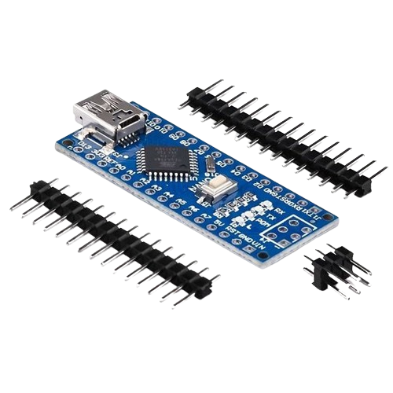

E-KICK
How The Force Sensor Works?
The microcontroller, such as an Arduino, plays a central role in working with the force sensor to capture, process, and output data. Here's a step-by-step explanation of how the microcontroller interacts with the force sensor:
1. Sensor Integration:
Connection: The force sensor is physically connected to the microcontroller through its input pins. For a load cell, this might involve using an analog-to-digital converter (ADC) or a dedicated amplifier like an HX711 module, which amplifies the small voltage changes from the load cell to a level the Arduino can read. For a force-sensitive resistor (FSR), the sensor is typically connected directly to the analog input pin of the Arduino.
2. Signal Reading:
Voltage Output: When the force sensor detects a strike or pressure, it changes its electrical resistance (in the case of an FSR) or produces a small voltage signal (in the case of a load cell).
Analog Signal Conversion: The microcontroller reads this signal as an analog voltage, which is proportional to the force applied. For instance, an FSR's resistance decreases as force increases, leading to an increase in the voltage that the microcontroller detects.
3. Data Processing:
Analog-to-Digital Conversion: The Arduino microcontroller converts the analog signal from the sensor into a digital value using its onboard ADC. This conversion is necessary because microcontrollers operate in a digital realm, meaning they process data as discrete values (usually in a range from 0 to 1023 for a 10-bit ADC in Arduino).
Calibration: The microcontroller may need to calibrate the sensor readings to correlate the digital values to actual force measurements. This often involves defining a relationship between the sensor output and known force values.
4. Data Analysis:
Force Calculation: Once the sensor data is converted to a digital value, the microcontroller can apply algorithms or formulas to translate this value into a meaningful force measurement, typically in newtons.
Real-Time Processing: The Arduino can continuously read and process data, enabling it to track forces in real-time as the athlete strikes the pad. This allows for immediate feedback on the force of each strike.
5. Output and Feedback:
Data Display: The processed force data can be displayed on an LCD screen, sent to a computer via serial communication, or logged onto a storage device like an SD card. This provides instant feedback to the user or can be analyzed later.
Triggering Actions: The microcontroller can also trigger actions based on the force data, such as lighting up LEDs, emitting sounds, or vibrating the pad when a specific force threshold is reached, adding an interactive element to the training.
6. Communication:
External Communication: The microcontroller can send data wirelessly (e.g., via Bluetooth or Wi-Fi) to other devices or apps for further analysis, enabling remote monitoring or integration with larger training systems.
Copyright @WhiteNoise